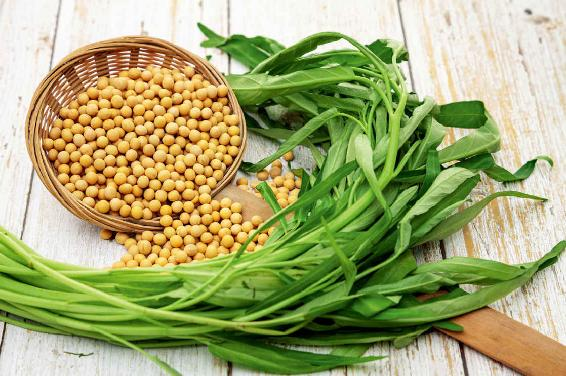
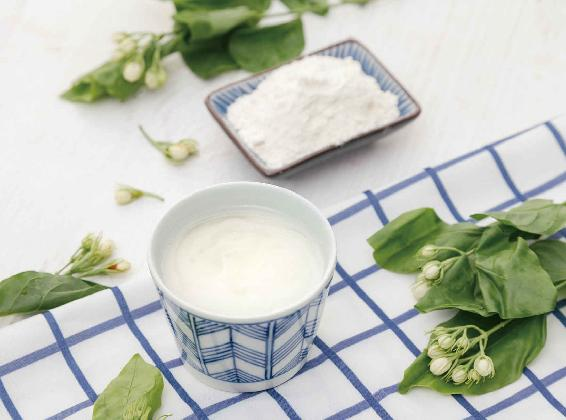
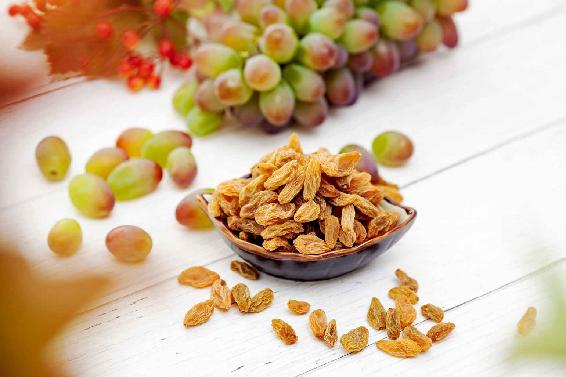
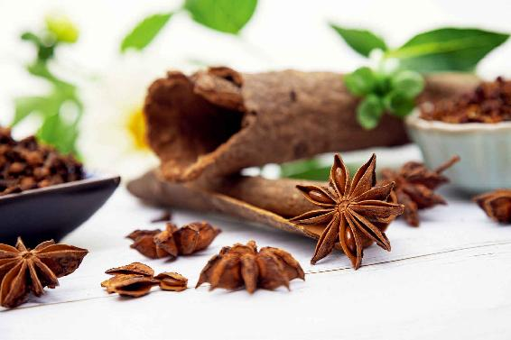

我曾经给大家分享过我自己写的四季五味饮食养生的歌诀，其中第一句话就是“春吃甘，脾平安”。
春天是属肝的季节，为什么我们要强调脾的平安呢？
春天属肝，这个时候肝气很旺，容易伤脾。这也是历代医家总结出来的一个规律：当一个人的肝有问题的时候，往往不是肝先表现出来问题，而是脾胃先出问题。
中医有一句经典论述：“见肝之病，知肝传脾。”当一个人的肝有问题的时候，不一定是要先去调肝，而是要先去调脾，因为肝有病首先会传给脾。如果不把脾的功能给调理好的话，人吃什么药或者吃什么食物都不容易吸收，都难以调理到肝上。
因为脾是主管人体运化的，它负责把我们吸收的东西运送到身体的各个器官中去。如果脾的运化功能不好，它就不能把药物的精微成分或食物的营养送到该去的地方。所以有经验的中医在调理肝时，一般都要开调理脾的药物。
肝，其实也是人体的一个消化器官，它负责分泌胆汁及多种消化酶。如果肝的功能出了问题，那它分泌的消化酶就会出现问题，我们吃进去的食物就会消化得不完全，或者是在消化上出一些问题。这样一来，脾所运输的营养物质就不齐全了。
打个比方，本来应该是整整齐齐打好包的货物，现在乱七八糟地堆在了一起。对于脾来说，这就属于超负荷运输，如此下去，它就会变得虚弱，以致慢慢地出现问题，这就叫“肝病传脾”。
古人很早就观察、认识到了这样的现象和规律，他们把这种现象高度精炼，总结成了三个字——“木克土”。
肝是属木的，脾是属土的，肝气过旺会伤到脾，古人把这种现象称之为“木克土”。这是中医很深刻的五行理论，也是中医基础理论中很重要的部分。
有些朋友可能会以为，“木克土”是古人的一种想象，然后由此再反推到各种中医学的理论上。不是这样，这应该是古人在总结大量实例之后，再通过自己的思考，精炼出来的规律。后来，古人把它推广到其他的事例上去验证，最后发现这个规律是带有普遍性的。
既然春天肝气过旺容易伤脾，那我们怎么来保护脾呢？什么东西能补脾呢？那就是甘味。
因为五味入五脏，是专门来补益脏腑之所缺的，脾的正味是甘味，甘味的食物正好补脾之所缺，所以在春天这个属肝的季节，我们反而要多吃甘味来保护脾的平安。这是春天吃甘味的原因之一。
原因之二，春天是生发的季节，生发是需要能量的。这个能量从哪里来呢？并不是从昂贵的补品中来，而是从甘味的食物中来。甘味的食物才是最能补人体气血的。
一说到甘味的食物，小朋友可能会很高兴，是不是可以多吃甜的东西了？
其实，甘味不单单是指甜的东西，它还包括很多我们平时觉得没什么味道的食物，而这一类的食物才是甘味中最主要的。比如，在主食中，大米、面、玉米、土豆等几乎都是甘味的；在蔬菜中也有甘味的，比如，白菜、莴笋、胡萝卜；在肉类中也有甘味的，比如，鱼肉、牛肉；鸡肉虽然带有甘味，但它也带有酸味，所以它不是纯粹的甘味食物。
甘味并不是人们平时理解的甜味，其实，甘味分为甜味和淡味两种，甜味只是甘味中的一种。

淡味才是甘味中的主要味道，也就是正味。为什么说“春吃甘，脾平安”，而不说“春吃甜，脾平安”，原因就在这里。
春天要吃的甘味食物，其实主要就是指这些淡味的食物。
淡味的食物，您细细去品也能品出一些甘味，特别是粮食类的食物，不管是米饭还是面食，您仔细地咀嚼它，到最后都会有一丝甜味。这是因为粮食都含有淀粉，淀粉其实就是一种糖，叫作多糖，我们平时调味用的白糖是单糖。这些都是现代营养学上的认识。
我很佩服古人，他们并没有这样去分析食物的营养，也不知道什么叫作单糖、多糖，可他们知道把米、面这些粮食归为甘味的食物。
我觉得，这只能说明古人对于生活的观察，对于食物味道的品鉴是细致入微的，所以他们才能吃出粮食中这样一丝甘甜的味道。
淡味是甘味中最主要的味道，而淡味的食物也是人们平时生活中吃得最多的，比如，米、面、白菜、山药、牛肉、鱼、虾等。特别是有鳞的鱼，它们是淡味食物中的代表，而无鳞的鱼，往往是带有咸味的。
春天的时候，您可以多吃淡味的鲫鱼、鲤鱼，它们都是很滋养脾胃的。

淡味食物的主要作用是补益中气、调和脾胃。
平时气比较虚的人，或者一呼吸就觉得气短，不能呼吸得很深长的人，或者总觉得很乏、不爱说话、不爱动的人，还有一动就出汗的人，特别容易疲劳，一到春天就犯春困的人，等等，这些都是中气不足的表现。这些人在春天就可以多吃淡味的食物来补身体的气。
淡味的食物不仅能补中气（中气主要就是脾胃之气），还能补肺气。淡味的食物是可以润肺的，所以一些老人如果是由于肺虚、气虚而引起干咳的话，可以用淡味的食物来补。
甘味中还有一种味就是甜味，甜味的东西有两大作用。
1.只要是甜味的食物，都可以解毒
甜味是可以缓解药物毒性的，比如，甘草是甜味的。在很多传统的中药配方中，都会用到甘草，为什么？因为甘草可以调和药性，其实，就是因为怕配方中有一些中药的药性比较猛烈，容易伤身体，所以放一点甘草进去调和一下。
中医在开方的时候，如果要用到一些有毒的中药，往往会加入大剂量的甘草来解毒。传统的偏方里，怎么来解毒呢？就是煮大剂量的甘草水让中毒的人喝下去。
其实，不仅甘草能解毒，只要是甜味的东西都是可以解毒的，比如，白糖、红糖、冰糖。但因为糖类比甘草更甜，它们的解毒功能有时候还有点过了。因此，人们在吃中药汤方的时候，一般讲究不能随便放糖，怕的就是糖把药性都给解了，喝下去就没有那么好的疗效了。
2.可以止痛
比如，一个人肚子痛，给他喝一杯糖水就能缓解。再比如，有的人突然头痛，特别是加班、工作劳累之后头痛，喝一杯糖水效果也是很好的。这是因为糖水不仅能解除头痛，还因为糖是大脑的能量来源，喝糖水给大脑补充了能量，人的大脑就会觉得轻松很多。又比如，有的人胃痛，喝点糖水也会感觉好一些。
甜味的止痛作用，不仅针对身体内部的痛，身体外部的痛它有时候也有效果。比如，一个人突然抽筋了，给他喝点糖水就能缓解；有的人突然受寒，引起了肠痉挛，疼得在床上打滚，马上喝点热热的糖水，也会感觉好一些。
甜味止痛的功能叫“缓急止痛”，就是说突然的疼痛，喝甜味的东西能够马上得到缓解；但如果是长期的慢性疼痛，喝甜味的东西就没有太大的效果了。
知道了甜味的好处，有些朋友可能会很开心，觉得找到了吃甜食的理由。但要注意，甜味的两大功效——解毒、止痛，都是在需要的时候才能用的，平时我们是不能多吃甜味的东西的。
平时如果您没有吃到有毒的东西，也没有肚子痛，吃太多甜味的东西就太滋腻了，会阻碍脾的功能。
适当的甘味是补脾的，但是过甜就会伤脾。之前我讲过，五味入五脏，适度是补，过度就是伤害。甜味对于脾的功能也是这样，适度是补，过度就是伤害。
小朋友都特别爱吃甜的，这也是一种本能的选择。因为小朋友的脾通常都比较娇嫩，稍微吃一点甜味的东西可以补脾。随着年龄越来越大，脾的功能会越来越强，成年后就不用吃太多的甜食了。
请记住，吃甜味的东西来补脾，一定要适度，不能吃多了，否则会伤脾。平时还是应该多吃米饭、面条这些粮食类中的甘味食物，只有它们才能真正、平和地养脾，养身体。
吃甜食太多会使人肾虚，也会影响人体对钙质的吸收，容易使人得腰椎病和颈椎病。
人小的时候都爱吃甜食，长大以后，就越吃越少了。这就是人的一种本能的选择。因为成年后，脾的功能虽然强了，但肾却开始衰弱了。人体为了保护肾，就本能地选择少吃一点甜食。所以有时候我会跟一些朋友们开玩笑说：“如果我们想知道一个人的脾和肾是否还健康，那就看他是否能够承受甜食。”
注意，我说的是承受甜食，并不是说多吃甜食。如果一个人吃了甜食以后，觉得很舒服，没有生痰湿，也没有影响消化，这说明他的身体还比较健康，脾和肾的功能都还好。
但一个人吃了甜食之后，不消化、会生痰、会难受，或者是得各种各样的慢性病，那就说明他的脾和肾的功能开始虚弱了。典型的慢性病就是糖尿病。糖尿病其实就是脾肾双虚，吃了甜食以后，身体无法调节，因此，糖尿病患者怕吃甜的。
甘味是属土的。土是应四季之气的，也就是说，不论哪个季节，都要以吃甘味食物中的淡味食物为主，它是我们身体主要的营养来源。
如果您觉得身体虚弱，需要补，真的不需要急于去买补药。首先要检查一下自己的一日三餐，甘味的食物，特别是淡味的食物吃得够不够，有没有吃到足够的主食。
有时候，养生真的非常简单，就是好好地吃一碗饭，但现在很多人往往做不到这一点。希望从这个春天开始，我们每个人都能好好地吃饭，让脾平平安安。
前面，我给您介绍了一些典型的甘味食物。还有两类甘味食物，它们不是那么典型：一类不仅带有甘味，还带有其他的味道；另一类食物，它主要的味道并不是甘味，可又带有一丝丝的甘味。
这两类不是纯粹甘味的食物，我们在春天适不适合吃呢？如果吃的话，又怎样根据自己的体质来挑选和搭配呢？
甘味,属土，是女性的象征，所以甘味有一个特点，就是特别能够包容，像中国人所说的土的性格是厚德载物，甘味也是如此。
甘味跟别的味道搭配在一起的时候，它就会随着别的味道而改变。
甘味本身是什么性质的呢？纯粹的甘味是中性的，略微偏阴，可一旦它跟别的味道搭配，就会改变性质。这种阴阳属性的改变，打一个比方，就是“嫁鸡随鸡，嫁狗随狗”。
食物分为五味，甘味跟其他四味分别搭配在一起，会有怎样的改变呢？
1.甘味和酸味在一起，有滋阴的作用
甘味和酸味在一起，就会强化它的阴性，使它转化为一种阴性的食物，有滋阴的作用。
比如，我们平时最熟悉的甘味和酸味在一起的食物是什么呢？就是水果。大多数水果都是酸甜味儿的，而这种酸甜味儿有滋阴的作用。
酸甜味儿的水果中比较典型的有橙子、橘子、葡萄、梨、山楂、苹果等，都有滋阴的作用。阴是什么呢？阴就是水液、营养，所以水果的营养都是很丰富的，还可以给我们的身体补充非常好的营养水液。
这些水果都是产自秋天的。秋天是一年四季中水果最丰富的季节，特别是酸甜味儿的水果，在这个季节最为常见。这或许是大自然的有意安排，好让我们在秋冬季节可以很好地吃水果来养阴。

酸甜味儿的水果在其他季节有吗？有！但不多，而且其他季节的酸甜味儿水果，往往还会带有其他的味道。
比如，中国的大部分地方，春天几乎很少有水果。被称为“百果之先”的樱桃，虽然是一年中最早出现的水果，可它是在初夏的时候成熟，也就是5月初。
樱桃也是有酸甜味儿的，可它还带有另一种味道——苦味，所以樱桃是可以入心的，是一种养心的水果。
夏天最常吃的两种瓜——西瓜、甜瓜，都是没有酸味的水果，它们是甜味的。
酸甜味儿的水果主要产自秋天，因此，在春天的最初两个月，我们是不适合吃酸甜味道的水果的。春天的最后一个月，您可以很少地吃一点，但那时候一定也要加上一个辛味，也就是有一点点的辛辣的味道才可以吃。
有一道菜叫鱼香肉丝，这道菜有酸，有甜，又有辣，达到了阴阳平衡，您可以在春天的第三个月吃类似这样味道的食物。
2.甘味和辛味在一起，有助阳的作用
跟甘味和酸味在一起恰恰相反，甘味和辛味在一起会转化为阳性，有助阳的作用，这也是适合在春天和夏天来吃的味道。
哪些食物是甘味和辛味在一起的呢？
比如说芹菜，就是一种甘味加辛味的食物；还有就是我在早春给您推荐吃的五辛盘、春盘菜。
所有这些带有辛味的蔬菜，基本上都是辛味加上甘味的。但萝卜除外，它是带有苦味的。
在早春的时候，吃一些辛甘之味的蔬菜，有生发身体阳气的作用。
在调料中，也有辛味加甘味的，比如，厨房里经常用到的大料，也就是八角、茴香、肉桂、桂皮等。这些调料吃起来既有点甜味，又有点辛味，都有助阳的作用。为什么我们在炖肉的时候要多放这样一些调料？为的就是生发脾胃的阳气，帮助消化肉类。
甘味和辛味不仅在春天，到了夏天也是同样可以吃的。在初夏开始的时候，我们要喝两个月的姜枣茶，姜枣茶也是用甘味和辛味搭配在一起的，喝它可以帮助我们的身体助长阳气。
为什么我们不单独用辛味来助长身体的阳气呢？

这是因为辛味虽然能够升阳，但是它的升散作用比较强，容易使人体升散过度，变得燥热。
3.甘味和苦味放在一起，有祛湿的作用
如果我们把甘味和苦味放在一起，有祛湿的作用。
比如，薏米、茯苓、白扁豆，都属于甘味中的淡味食物，但又带有一丝丝的苦味，它们都能够祛湿。
4.甘味和咸味放在一起，有补血的作用
如果把甘味和咸味放在一起，有补血的作用。
我曾经讲过，鱼肉是甘味的，有鳞的鱼是甘味食物的代表。但海里的无鳞鱼，除了有甘味，它还有咸味，是咸甘之味，这样的鱼有养血的作用，比如，我经常给朋友们推荐的墨鱼，就是一种补血的好食物。
当我们掌握了甘味和其他几种味道搭配的原理，其实就掌握了一个食疗的好方法。
其实，不仅是食疗，我们在配药的时候，包括在做菜的时候，都可以用到甘味的这种特性。不管是酸的，还是苦的、辣的，您放一点点糖进去，口感就会好许多。
会做菜的朋友都知道，做菜的时候只要往菜里放一点点糖，做出来的菜的味道就会很不一样。而吃菜的人其实是品不出来甜味儿的，就觉得这道菜好吃。所以大厨都知道，放一点糖在菜里是可以提鲜的。
甘味的特点——它可以调和一切味道，可以增长其他味道的补益作用，同时又能缓和其他味道的偏性。
甘属土，土的性格就是厚德载物，它是最能包容的。土是养育万物的，甘味也是如此。
如果我们掌握了甘味与其他各种味道搭配的方法，也就掌握了饮食养生的一个秘诀，您可以把这个秘诀运用到日常生活的家常便饭中。